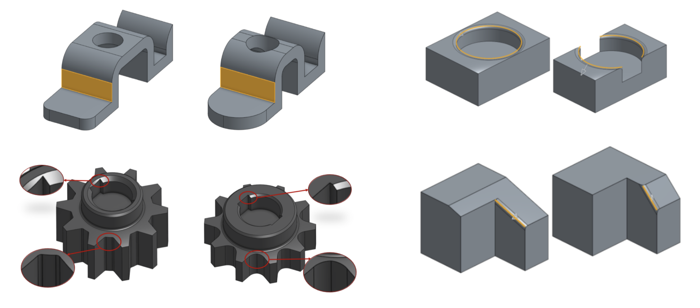
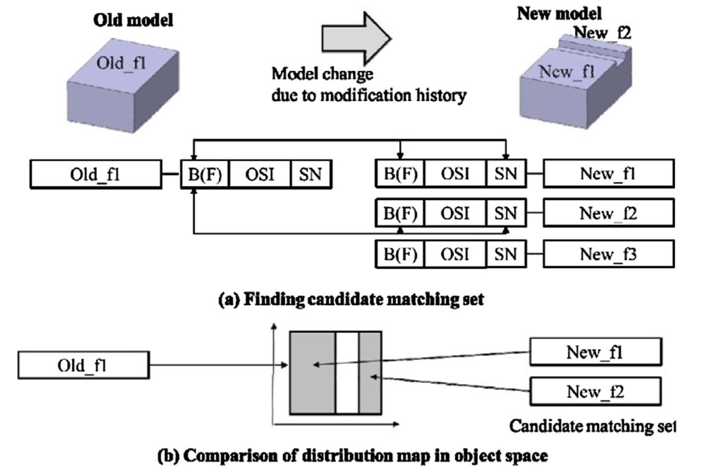
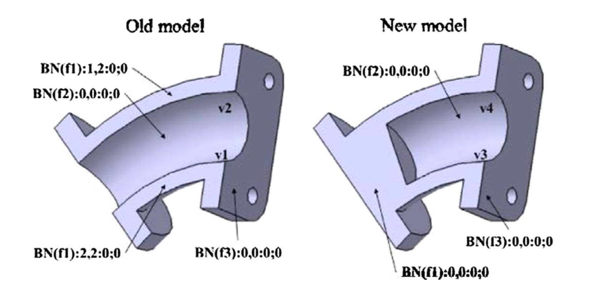
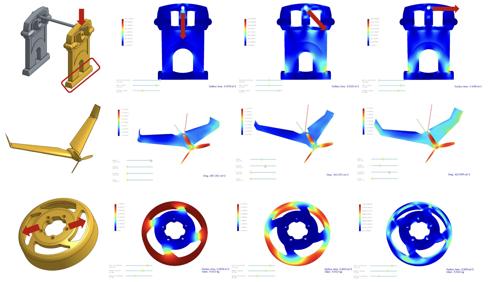
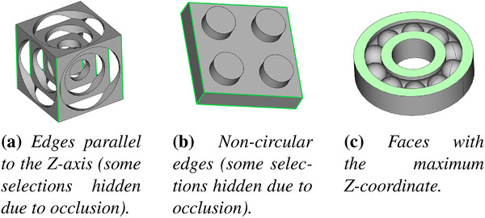
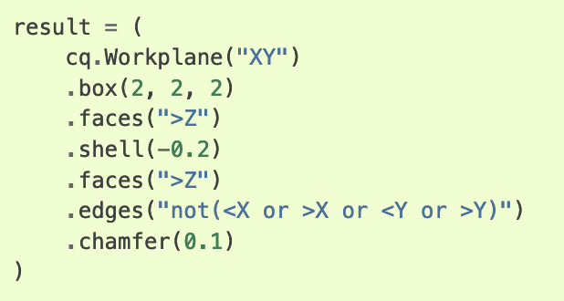

Elodin: A Language for CAD References
Parametric CAD is fundamentally built on operations that select an object (an edge or face) and
operate on it (chamfering, extruding, etc). A major robustness issue in parametric CAD is the problem of
making these selections,
as when users edit parameters early in the parametric history, references may fail to resolve for operations
downstream as referenced objects disappear or jump around after parametric changes. Our recent paper proposes a
domain-specific programming language which users can use to make selections that don't break unexpectedly, even as
object topologies change. In this article we'll look at what causes reference breakage, how existing CAD systems
attack the issue, why it's particularly useful to solve now, and introduce our solution.
Referencing Breakage
The primary cause of reference failure is a
topological change; when a
parameter change causes the object we're modeling to have either a different number of
vertices, edges, and faces (topological entities) or to have its current entities
connected to each other in a different way. If we imagine each entity in the model
having an ID (say,
Face19), a topological change might cause Face19 to disappear (if
we have less than 19 faces), or to jump around randomly (if a different face happens
to now be the 19th). In some cases Face19 might exist but in a different form, as the
parameter change might have split it into multiple faces.

Topological changes due to continuous parameter changes in CAD models. Image: Schulz et al, Interactive
Design Space Exploration and Optimization for CAD Models, 2017
Approaches: Entity-Matching
Most parametric CAD systems (think Solidworks, NX, etc) use something called an
entity-matching based system to identify the face after this
transition. They keep track of the model state where the original selection was made.
Usually the selection is made by clicking on the object, meaning the geometry was
generated with a particular parameter configuration. They compare this state to the
new geometry after the parameter change, and usematching heuristics (read:
guesses) to compare elements and determine which
new entities correspond to
which
old entities. This correspondence is used to then resolve the
references in the
new configuration, by replacing the old referred element
with the new ones that correspond to it.


Heuristic matching of entities after parameter changes cause topological changes.Image: Farjana et al,
Mechanisms of Persistent Identification of Topological Entities in
CAD Systems, 2018
Unfortunately, these heuristics are imperfect. While there's are many cases where they
are correct, and decades of fine-tuning have made them quite capable, there are also
many cases where the correspondence fails to find the correct element, or otherwise
results in surprising behavior. Fundamentally, this
has to be the case: as a
user, when we click on an element in one generated version of the model, we aren't
specifying which elements we want selected in other versions. And... this is pretty
much fine. When an engineer updates a CAD model parameter, they'll see the breakage,
and painstakingly track it down - sometimes it's a spurious error, sometimes something
just needs to be reselected. Because edits are made manually, edits can be fixed
manually too. Heuristics are usually a time-save, not a dealbreaker .
Motivation: Model Optimization

Optimizing a model's material and structural performance in response to physical
loads. Image: Schulz et al, Interactive Design Space Exploration and
Optimization for CAD Models, 2017
The story changes when we want to
optimize over a CAD model: by setting up an
automated search through the entire available parameter space to minimize some cost
function, like minimizing weight or volume while maintaining structure, or optimizing
in response to external loads or manufacturing concerns. Today most such
optimizations are done purely on a finite-element mesh of some form (rather than the
parameter space of the model), and the results of this optimization need to be
manually reconstructed back into a usable CAD model. Optimizing over the parameter
space directly is an application fundamentally enabled by parametric modeling in a way
that direct modeling can never compete with, but there are issues with taking
advantage of it: namely, the model might break on most of the parameter space. If this
throws an error, it precludes the use of an automatic optimizer, which might generate
the model hundreds or thousands of times. If it doesn't, then we often get malformed
geometry where the optimizer discovered a way to minimize the cost function by freeing
us from the shackles of having our model be physically possible. So we'd like a way to
specify references in advance, without manually modifying them after changes, knowing
that they won't break across parameters.
Approaches: State-based selection


Left: queries for geometry expressed on relations between geometric state at a given parameter point.
Right: A selector in the CADQuery DSL.
Parametric modeling or procedural generation tools based on code (e.g. Grasshopper,
CADQuery, etc), rather than graphically clicking on elements, tend to just leave the
referencing problem up to the user: when you want to select a face of an object, that
object gives you a list of faces, and you have to write code that selects the right
face by looking at the geomtries of all the faces and making a decision. Usually this
involves saying something like "get me the face in this direction, that's more to the
right than the other faces in this direction". This can break if we rotate or mirror
the object, so now the face is "more to the left", so we might instead use "give me
the face closest to this point", and program the position of the point such that it
moves to get us the face we want. While this can work, it's painstaking (to figure out
what the position function should be so that it works over all parameters), prone to
errors (forgetting to update the mechanism by which we're selecting things when we
change the model) and duplicative (we already did the math
somewhere to compute the
location of the face when we made the face to begin with, why do we need to do it
again?). So this method of selecting based off of the current geometric
state is one
way of accomplishing the goal, but having reference operations be brutally difficult
isn't that appealing for CAD applications where these operations are so common
.
Other program-based modeling systems (e.g. OpenSCAD) sidestep the problem entirely, by
disallowing references. This allows the internal representation of geometry to take on
more efficient properties since it doesn't need to track explicit entities and can
instead use a different representation (e.g. SDFs, like
Antimony does)
which makes traditionally-expensive operations like Union and Difference very cheap.
This is an interesting direction to explore, but it poses a quandary for CAD users,
because disallowing references precludes both the traditional way of thinking about a
model and many basic operations, such as chamfers, from being packaged as functions
you can call. It also precludes applying constraints on generated geometry, since you
want to be able to refer to elements to state that they must be some distance apart,
or parallel, or what have you.
https://wiki.freecad.org/Topological_naming_problem
https://forum.freecad.org/viewtopic.php?t=27278
Our approach: Reference using Lineage Queries
Instead of comparing geometric state to find elements, we take the same approach of
"querying" and instead select elements by their
lineage. Abstractly, lineage
is like a dependency graph: if shapes A and B are subtracted from each other to get C,
C has lineage from both A and B. What's more, in this case every
element of C
comes from some combination of the elements of A and B: vertices are either direct
copies of vertices from A or B, or formed by a new intersection between two particular
edges of A and B. So all of these sub-elements have lineage between each other too,
and in general we can define some rules for which output elements derive from which
input elements for most CAD operations. It's this fine-grained lineage that allows us
to make selections.
[figure: two-square lineage (simple)]
To query a specific point using the lineage, we'll construct a query:
fromAll(a.bottom, b.left)
This will select a point that has lineage from both of those edges; which will only
happen if the point is an intersection. We'll use it like so:
point = query(c.points, fromAll(a.bottom, b.left))
In this case,
point is still a
set of elements, since (1) it's
possible there could be no such point, if A and B don't intersect, and (2) the lineage
system doesn't inherently know that there is only ever at most 1 element in this case.
So we have to use an additional assertion to say that we expect the set to be of size
1, and that we're at an invalid point in our parameter space if it isn't:
point = single(query(c.points, fromAll(a.bottom, b.left)))
In this case, we could get the same point using a different query, looking for lineage
between
a.bottom and
B, since
a.bottom
intersects
B in only the point we care about:
point = query(c.points, fromAll(a.bottom, B))
However, these two queries return different results when we make
A wider,
and
a.bottom intersects multiple edges of
B. The original
query will only return the one point, while this one returns two:
[figure: two-square A-wide]
Transitivity
[figure: two-square transitive]
Using this type of lineage query is different from specifying an exact global history.
To see why, consider if we modified the program to rotate
B after
creating it, before then subtracting from
A. In this case, even though
there is a new polygon
D in between our query argument (
B)
and the set we're querying (the points of
C), the query still works,
because it follows the lineage from B through D and then to A. In this sense, lineage
queries are
transitive, which makes them flexible: often when you
edit the model upstream, downstream queries remain unchanged.
Containment
[figure: tetris-containment ]
In some cases we want to select a single element (call it the edge
F, in
C's edges), but there might not be a set of ancestors that returns
uniquely return
F: if we were to use
query(c.edges,
from(A.right)) here, we would get both edges
E and
F. Using
fromAll(A.right, B.bottom) returns none of C's
edges at all; but if applied to
C.points will return the intersection
point between the two. We want to distinguish between
E and
F, which we can do because they
contain elements (the points, in this
case) that have different lineage. We compose the query:
from(A.right) and contains(from(B.bottom))
This returns any element that both itself has lineage from
A.right, and
also contains an element that has lineage from
B.bottom. This
eliminates
E handily. In this particular configuration, the
from(A.right) term isn't even required; though eliding it would yield
multiple edges if
B were to be shifted to the left so far that the object
became a cross.
Assertions
We also mentioned [link] optimizing a model's parameters, or using a model as a
re-usable component. Program-based models make this possible, but we need to bound the
parameter space so that we don't end up accidentally creating invalid geometry all the
time. This is where assertions come in. We could create bounds directly on our
parameters, but that can be tedious and sometimes involves a lot of math, when instead
often what we want to "bound" is a given topology.
We saw an example of an assertion,
single(), which guarantees that the
result of a query contains a single element, or causes the program to fail. This is an
umabiguous signal to an optimizer or external user that the inputs to the program are
infeasible; either we've recieved zero results or more than one.
Lineage can make constraining input argument shapes so that the results never change
topology much easier: rather than reasoning out that with a given constraint then two
objects won't overlap, we can assert that no elements with a particular lineage exist,
i.e.
empty(query(c.points, from(d,e)))
The big advantages of this are that (1) it saves redundant math from intersections that have already been computed
and (2) these assertions can be inserted after the fact, making reasoning easier.
Worked Example: Lineage in Practice
~~~~ ??? ~~~~
Limitations
The biggest challenge to this method of referencing is that implementing it robustly
requires kernel support - a black box kernel that doesn't provide lineage information
at a very fine granularity can't be used, and reverse-engineering lineage on a
per-operation basis is both expensive and brittle. As a result, we've implemented our
own kernel operations, and the tool provided can support a subset of "2.5D" geometry,
where topology-modifying operations are performed entirely in 2D and the results are
extruded or revolved into solids. It turns out this can model a reasonable class of
real-world objects, but without support for fully-3D boolean operations it can't model
everything. Thankfully, implementing lineage on top of such operations is a direct
extension of the 2D-case; unlike the intersection math itself.
The primary
referencing limitation is the inability to stably reference points
resulting from intersections of splines or other complex curves. While this geometry
can be represented, these complex curves can intersect and form many points (up to 9,
in the case of cubic bezier patches), and it's unclear how to order this set in such a
way as to get a stable reference. As a result, despite the fact that the intersections
can be computed, the points resulting from intersecting two splines all have identical
lineage, and are only usable as a complete set. We have to fall back to the geometric
state-based methods we mentioned earlier to get any more specific point than that.
However, assertions still work - so if we know the splines should only ever intersect
in one place,
single() still applies.